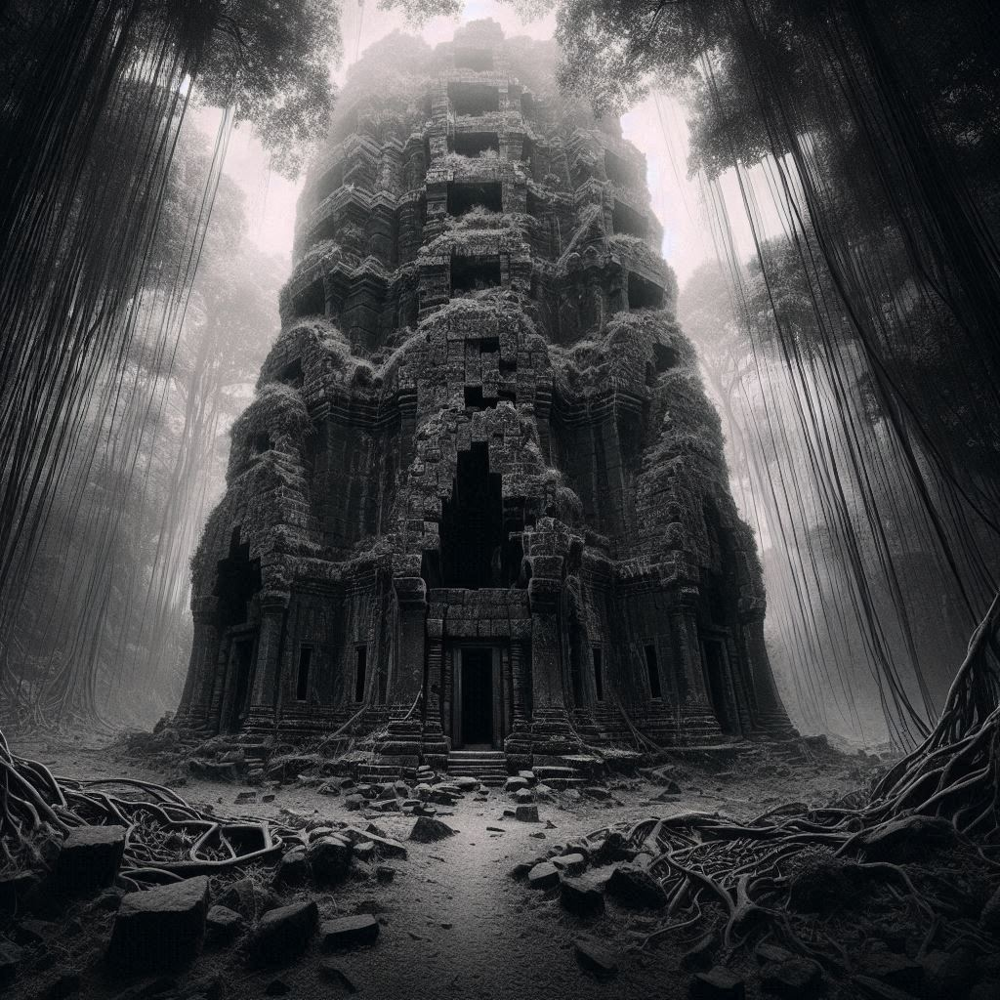

Capítulo 8: O Caminho Escolhido
O sol começava a se pôr no horizonte, lançando um brilho dourado sobre a densa floresta que se estendia diante de Shiro e Ive. Os raios de luz filtravam-se pelas copas das árvores, criando padrões de sombras dançantes no chão coberto de musgo.
Shiro observou as árvores altas e imponentes, sentindo uma sensação de intriga misturada com um leve nervosismo. A floresta era escura e misteriosa, seus segredos escondidos além do alcance da visão. Ao seu lado, Ive parecia animada com seus olhos brilhando.
"Este é o caminho que escolhemos", disse Shiro, com sua voz carregada de cautela. "Não sabemos o que nos espera adiante, mas estamos juntos nessa jornada, não é?"
Ive assentiu com um sorriso confiante brincando em seus lábios. "Não importa o que encontrarmos, vamos enfrentar juntos", ela disse, colocando uma mão no ombro de Shiro.
Enquanto avançavam pela floresta, uma sensação de inquietude pairava no ar. Um silêncio estranho parecia envolver o ambiente, interrompido apenas pelo sussurro suave das folhas nas árvores.
De repente, uma voz ecoou através das árvores, suave e melodiosa, mas ao mesmo tempo carregada de uma aura misteriosa. "Olá, viajantes", disse a voz, parecendo flutuar no ar. "É raro ver almas corajosas como vocês vagando por estas terras esquecidas."
Shiro e Ive trocaram olhares, com seus corações batendo mais rápido com a surpresa do encontro. "Quem está aí?", perguntou Shiro.
A voz riu suavemente, uma risada que parecia ecoar de todas as direções ao mesmo tempo. "Eu sou apenas um observador, um guardião dos segredos antigos que jazem sob a superfície", respondeu a voz. "Mas vocês, viajantes, são diferentes. Vocês carregam consigo a promessa de mudança e transformação."
Shiro e Ive trocaram olhares novamente, sentindo uma sensação de curiosidade misturada com apreensão. "O que você quer dizer?", perguntou Ive, com sua voz trêmula.
"Ah, isso é para vocês descobrirem", respondeu a voz misteriosa. "Mas lembrem-se, nem tudo é o que parece neste mundo. Há segredos enterrados sob cada sombra, tramas tecidas em cada brisa. E vocês, estão prestes a descobrir que nem todos são o que parecem ser."
Shiro sentiu um arrepio percorrer sua espinha enquanto a voz falava, suas palavras ecoavam em sua mente. "O que você quer dizer?", perguntou ele, lutando para tentar entender.
"Alguns segredos são melhores se deixados enterrados", disse a voz misteriosa. "Mas outros estão esperando para serem descobertos. A escolha é sua, viajantes. Escolham com sabedoria."
E com isso, a voz desapareceu, deixando Shiro e Ive sozinhos na floresta escura e silenciosa com ar pesado.
Enquanto avançavam pela floresta, o ar estava impregnado com uma sensação de desconforto. Eles trocaram olhares preocupados, tentando discernir a origem da voz misteriosa que os havia abordado.
"Quem era aquela voz?", perguntou Ive, sua voz carregada de incerteza.
Shiro sacudiu a cabeça, incapaz de encontrar uma resposta. "Não sei", admitiu ele. "Mas algo me diz que não devemos subestimar o que ele disse."
Cada som da floresta parecia carregar um significado, cada sombra poderia ser uma possível ameaça. Shiro e Ive mantinham-se alerta, com seus sentidos aguçados pelo medo do desconhecido.
De repente, um movimento rápido e furtivo chamou sua atenção. Shiro girou na direção do som, mas não viu nada além de árvores e sombras. "Quem está aí?", gritou ele, com sua voz ecoando pela floresta.
Uma risada suave ecoou de volta, mais cheia de malícia e desdém. "Vocês estão perdidos em um mundo de segredos e mentiras", disse a voz misteriosa.
Ive agarrou o braço de Shiro, seus olhos arregalados de medo. "O que você quer?", perguntou ela, com sua voz trêmula.
A voz riu novamente, uma risada que parecia encher o ar ao redor deles. "Eu quero que vocês vejam a verdade", disse a voz. "A verdade sobre este mundo e sobre vocês mesmos."
Shiro e Ive trocaram olhares, com sua determinação começando a vacilar diante da ameaça invisível. "Nós não temos medo de você", disse Shiro, mantendo a voz firme apesar da incerteza que sentia.
A risada cessou abruptamente, substituída por um silêncio tenso e opressivo. "Vamos ver", disse a voz, antes de desaparecer completamente.
Shiro e Ive permaneceram parados por um momento, com seus corações ainda batendo rápido com o impacto do encontro. "O que acabou de acontecer?", perguntou Ive, sua voz mal contendo o pânico.
Shiro balançou a cabeça, incapaz de encontrar uma resposta. "Não sei", admitiu ele. "Mas vamos em frente, não deixe isso te abalar", disse Shiro tentando acalmar Ive, que aparentemente tem medo de fantasmas, algo um tanto cômico para uma ceifadora.
Enquanto avançavam pela floresta, uma sensação de opressão parecia envolvê-los. Cada passo que davam era acompanhado por uma sensação de que estavam sendo observados, como se olhos invisíveis estivessem fixos neles.
De repente, uma figura esguia emergiu das sombras das árvores, parecendo se materializar do próprio ar. Era uma silhueta fantasmagórica, contornada por uma aura de mistério e malícia. Seus olhos, brilhando com uma luz sinistra, pareciam penetrar a alma deles.
"Quem é você?", perguntou Shiro, com seu tom de voz carregado de desconfiança.
A figura sorriu, um sorriso que parecia conter todo o conhecimento do mundo. "Eu sou apenas um observador", respondeu ele, sua voz ecoando suavemente pela floresta. "Um guardião dos segredos antigos que jazem sob a superfície."
Ive apertou a mão de Shiro com mais força, seus olhos cheios de temor. "Mas é você de novo? O que você quer de nós?", perguntou ela, sua voz tremendo ligeiramente.
O observador sorriu novamente, um sorriso que não alcançava seus olhos. "Eu quero que vocês vejam a verdade", disse ele. "A verdade sobre este mundo e sobre vocês mesmos."
Shiro sentiu um calafrio percorrer sua espinha enquanto o observador falava. "De novo isso? O que você quer dizer com 'ver a verdade'?", perguntou ele, lutando para manter sua compostura.
A figura misteriosa deu de ombros, seus olhos brilhando com uma intensidade perturbadora. "Isso vocês terão que descobrir por si mesmos", disse ele. "Mas saibam que o caminho que escolherem será repleto de desafios e perigos."
Então, o observador virou sua atenção para Ive, seu olhar penetrante parecendo atravessar sua alma. "E quanto a você, minha querida?", disse ele, sua voz sibilante. "Você esconde segredos do seu companheiro? Há verdades que você não está disposta a compartilhar?"
Ive engoliu em seco, uma expressão de desconforto cruzando seu rosto. Ela olhou para Shiro, os olhos cheios de angústia e apreensão. "Eu não sei do que ele está falando", murmurou ela, sua voz mal audível.
Shiro apertou a mão de Ive com firmeza, seu coração apertado por uma mistura de preocupação e confusão. "Não importa o que ele diga", disse ele, tentando confortá-la. "Não precisa ter medo, estamos juntos nisso, lembra?"
Com isso, o observador desapareceu nas sombras da floresta, deixando Shiro e Ive sozinhos com suas perguntas não respondidas.
Com um suspiro pesado, continuaram sua jornada além das sombras da floresta. O mundo espiritual era um lugar cheio de mistérios e perigos, e ele estava prestes a descobrir até onde as suas escolhas o levariam.
Enquanto a figura misteriosa se dissolvia nas sombras, o eco de suas palavras continuava a ecoar na mente de Shiro e Ive. Uma aura de suspeita pairava sobre eles, alimentada pela semente da dúvida plantada pelo observador.
Shiro lançou um olhar preocupado para Ive, vendo o turbilhão de emoções que passava por seus olhos. "Ive...", começou ele, sua voz vacilante. "Você está escondendo algo de mim?"
Ive balançou a cabeça rapidamente, seus olhos cheios de lágrimas. "Não, Shiro, eu juro", disse ela, sua voz trêmula de emoção. "Não teria por que eu esconder nada de você."
Mas mesmo enquanto falava, uma pequena voz em sua mente sussurrava dúvidas. Será que ela estava sendo totalmente sincera com Shiro? Será que havia coisas que ela não queria que ele soubesse?
Enquanto isso, Shiro lutava para entender a verdade por trás das palavras do observador.
A dúvida pairava sobre eles como uma nuvem escura, obscurecendo o caminho que tinham pela frente. Mas, apesar de seus medos e incertezas, Shiro e Ive sabiam que precisavam permanecer unidos se quisessem sobreviver.
Enquanto continuavam a avançar pela floresta sombria, eles não podiam deixar de se sentir inquietos com as palavras do observador. A dúvida que ele plantara em suas mentes os acompanhava como uma sombra, obscurecendo seu caminho.
No entanto, eles não podiam se dar ao luxo de ficar parados diante do desconhecido.
À medida que avançavam, o cenário ao redor começou a mudar gradualmente. As árvores se tornaram mais densas e antigas, suas folhas escuras bloqueando a luz do sol e lançando sombras distorcidas no chão. O ar estava impregnado com uma sensação de antiga magia, fazendo com que se sentissem pequenos e insignificantes diante da vastidão da floresta.
De repente, eles emergiram de entre as árvores e se encontraram diante de uma área pequena e aberta. No centro, erguia-se uma torre imponente, com pedras negras e antigas, envoltas por um brilho suave que parecia emanar de dentro das rachaduras. As paredes da torre eram irregulares, como se o tempo e as forças do mundo tivessem tentado, mas falhado, em desgastá-la. Lianas e trepadeiras rastejavam pelas laterais da estrutura, como se tentassem reivindicar o que o tempo não conseguiu. No topo, janelas estreitas e sombrias estavam abertas, como olhos vigilantes que os observavam, e no centro da torre, uma porta de madeira maciça, coberta de inscrições indecifráveis, aguardava por eles. Uma energia sutil e ancestral envolvia a área, carregada com o peso de segredos há muito enterrados e jamais revelados.
Shiro e Ive trocaram olhares maravilhados diante da visão. "O que é isso?", perguntou Shiro, sua voz contendo um tom de reverência.
Ive sacudiu a cabeça, incapaz de conter sua curiosidade. "Não faço ideia", admitiu ela. "Mas parece ser um lugar cheio de segredos."
Enquanto observavam a torre, uma sensação de inquietação começou a se instalar em suas mentes. Eles podiam sentir a presença de algo antigo e poderoso, algo que os observava silenciosamente de dentro das sombras da torre.
Com corações acelerados, Shiro e Ive deram um passo adiante, prontos para explorar as profundezas da torre e descobrir os segredos que ela guardava. O que quer que os aguardasse lá dentro, eles sabiam que sua jornada estava apenas começando e que novas aventuras e desafios os esperavam além das paredes da torre antiga.